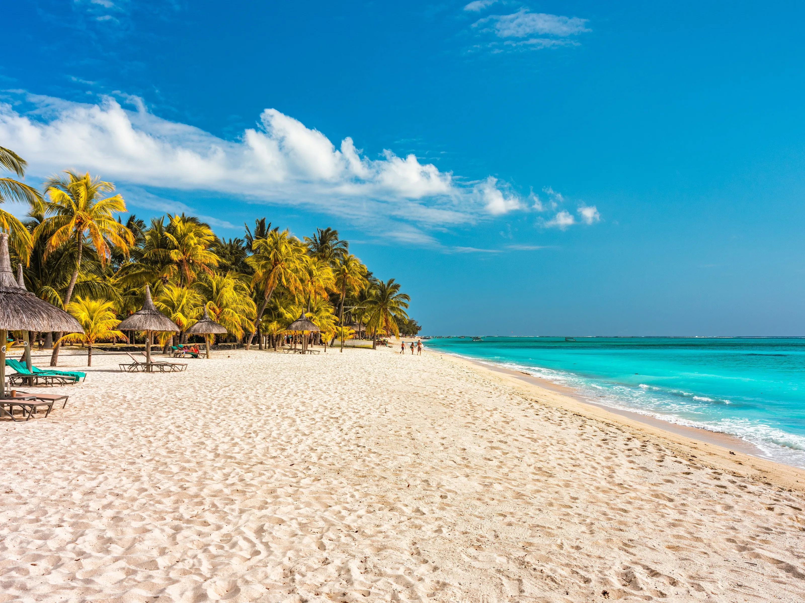

ЕГЗОТИЧНА ПОНУДА

ПЛАЖИ, ЛАГУНИ И ТРОПСКИ ПЕЈЗАЖИ
Маврициус
02.09 - 10.09
Откријте го Маврициус, островски рај со прекрасни плажи, тиркизни лагуни и бујни тропски пејзажи. Уживајте во топлото море, белите песочни плажи и незаборавните зајдисонца. Ова е совршена дестинација за релаксација, романтични моменти и егзотична авантура.
ЕГЗОТИЧНА АВАНТУРА
Главниот град на Маврициус, познат по живиот градски ритам, колонијалното наследство и прекрасната крајбрежна зона. Ќе имаме можност да го посетиме познатиот пазар, да прошетаме низ централниот дел и да уживаме во атмосферата на Caudan Waterfront, со време за шопинг, кафе и фотографирање.
Еден од највпечатливите природни предели на Маврициус, познат по уникатната Chamarel Seven Coloured Earths и прекрасниот водопад Chamarel. Живописниот пејзаж, бујната тропска вегетација и планинското опкружување создаваат совршена атмосфера за прошетка, истражување и фотографирање.
Едно од најпознатите туристички места на северниот дел од Маврициус, препознатливо по прекрасното крајбрежје, тиркизните води и живата атмосфера. Ќе имаме време за прошетка, шопинг и кафе, како и можност за кратко крстарење и уживање во мирните лагуни.
Еден од најпрепознатливите предели на Маврициус, доминиран од величествениот Le Morne Brabant и опкружен со тиркизни лагуни и тропска природа. Местото нуди спектакуларни панорамски погледи кон океанот и прекрасна атмосфера за прошетка, фотографирање и релаксација покрај морето.
Состанок со групата на аеродром во Скопје, 2 часа пред летот. Следува директен лет до Истамбул , па диретен лет кон Маврициус и пристигнување на аеродромот. По завршувањето на аеродромските процедури следува организиран трансфер до хотелот и сместување. По сместувањето следува време за одмор и освежување. Попладнето е предвидено за прва прошетка низ околината и запознавање со местото. Вечерта е слободна за вечера и индивидуални активности. Ноќевање во хотел.
Појадок и организирано разгледување на Порт Луис. Посета на централниот дел, пазарот и Caudan Waterfront, со време за шопинг и фотографирање. Следува слободно време за ручек и кафе покрај крајбрежјето. Попладнето е предвидено за индивидуално разгледување и запознавање со локалната атмосфера. Во договореното време следува враќање во хотелот. Ноќевање во хотел.
Појадок и организирано тргнување кон крајбрежјето на Маврициус. Следува морска екскурзија низ тиркизните лагуни со можност за пливање и сноркелинг. Патниците ќе имаат време за релаксација, сончање и уживање во тропските пејзажи. Предвидена е пауза за ручек и слободно време покрај морето. Попладнето следува враќање во хотелот и одмор. Ноќевање во хотел.
Појадок во хотелот и ден посветен на одмор на една од прекрасните плажи на Маврициус. Следува слободно време за капење, сончање, прошетка и фотографирање. Во текот на денот патниците ќе имаат можност за ручек, кафе и индивидуални активности. Попладнето продолжува со релаксација покрај морето и уживање во тропската атмосфера. Вечерта е слободна за вечера и одмор. Ноќевање во хотел.
Појадок и организирано тргнување кон Шамарел. Посета на Chamarel Seven Coloured Earths и водопадот Chamarel, со можност за фотографирање и прошетка низ природата. Следува продолжување низ живописниот планински предел и пауза за ручек. Патниците ќе имаат слободно време за уживање во природата и локалната атмосфера. Попладнето следува организирано враќање во хотелот. Ноќевање во хотел.
Појадок и организирано тргнување кон Гранд Беј. Следува прошетка покрај познатото крајбрежје, со време за шопинг, кафе и фотографирање. Потоа е предвидена морска активност со можност за кратко крстарење и уживање во лагуните. Патниците ќе имаат слободно време за ручек и индивидуално истражување. Попладнето следува враќање во хотелот и слободна вечер. Ноќевање во хотел.
Појадок и организирано тргнување кон југозападниот дел на островот. Посета на пределот околу Le Morne Brabant и уживање во спектакуларните погледи кон океанот и лагуните. Следува слободно време за прошетка, фотографирање и релаксација покрај морето. Патниците ќе имаат можност да уживаат во еден од најпрепознатливите пејзажи на Маврициус. Попладнето следува враќање во хотелот. Ноќевање во хотел.
Појадок во хотелот и одјавување согласно предвиденото време. По собирањето на багажот следува организиран трансфер до аеродромот. По пристигнувањето следува пријавување за летот и завршување на потребните аеродромски процедури. Потоа следи директен лет до Истамбул, па до Скопје. По пристигнувањето и преземањето на багажот завршува организираното патување.